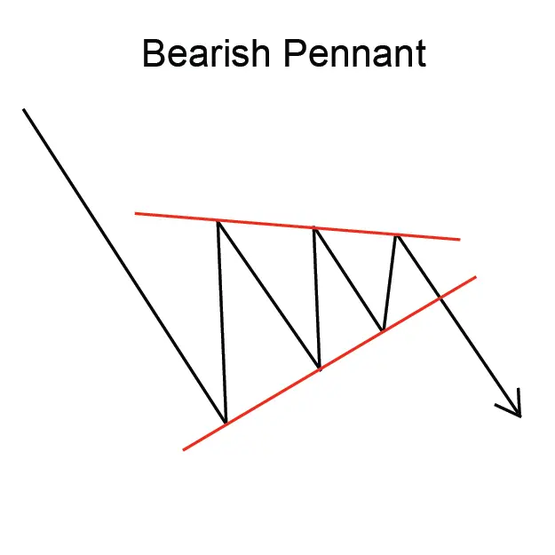
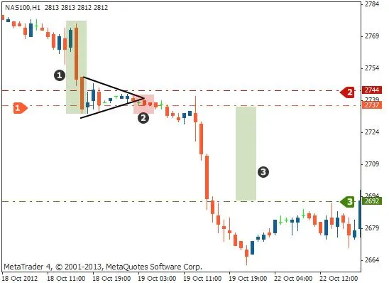

Implicaciones
Un Pennant (Bearish) se considera una señal de bearish, indicando que la tendencia de baja actual puede continuar.
Descripción
Un Pennant (Bearish) sigue una caída abrupta o casi vertical del precio, y consiste en dos líneas de tendencia convergentes que forman una forma de bandera estrecha y apagada. La forma Pennant generalmente aparece como una forma horizontal, en lugar de una con una tendencia hacia abajo o hacia arriba.
Además de su forma, el Pennant es similar en todos los aspectos a la Bandera. El Pennant también es similar a los patrones de continuidad del Triángulo Simétrico o Wedge; el Pennant es típicamente más corto en duración y vuela horizontalmente.

Características importantes
Las siguientes son características importantes para este patrón.
Líneas de tendencia
Para Pennants, las líneas de tendencias de precios tienden a converger. Al comienzo del Pennant, el precio sube
hacia abajo, tal vez en respuesta a un anuncio inesperado y negativo de la compañía. Después del aumento de
los precios, las fluctuaciones de precios continúan hasta que se reducen y se vuelven cada vez menos volátiles.
Este comportamiento aparece en un gráfico de precios con el aumento inicial de los precios formando lo que los analistas
técnicos denominan el "mast" del Pennant, seguido de una forma triangular del pennant.
Volumen
A medida que el Pennant se desarrolla, el volumen tiende a disminuir.
Martin Pring observa en su libro, Análisis Técnico Explicado, "un pennant es en efecto un triángulo muy
pequeño. En cualquier caso, el volumen tiende a contraer aún más durante la formación de un pinante
que durante el de una bandera". Sin embargo, al igual que con Flags, cuando el Pennant finaliza, a menudo observará un
fuerte aumento en el volumen.
Duración del patrón
En su libro,
Análisis Técnico de los Mercados Financieros, John J. Murphy identifica que Pennants and Flags son relativamente
de corto plazo y deben ser completados dentro de una a tres semanas". También observa que, por comparación,
los patrones de bullismo tardan más tiempo en desarrollarse que los relacionados con los de orejas.
Consideraciones de negociación
Posibilidad de inversión de precios
En algunos casos raros, el precio romperá contra el movimiento original del precio y creará una tendencia inversa.
La reversión del patrón puede ser señalada durante la formación de Pennant por un aumento en el volumen, en vez de la disminución más típica.
Duración del patrón
La duración del patrón depende de la magnitud de las fluctuaciones de precios (consolidation). Cuanto más grandes sean las fluctuaciones, más tiempo tomará un patrón para desarrollarse.
Precio objetivo
Se considera comúnmente que la longitud del mastro indica el aumento potencial de los precios. Al igual que la Bandera, el Pennant se considera una pausa en una tendencia descendente. Siguiendo el Pennant, el precio suele saltar para replicar la altura del mast, mientras continúa en la dirección de la tendencia de entrada.
Criterios que respaldan
Volumen
El volumen debe disminuir notablemente a medida que se forman los patrones.
Un fuerte pico de volumen el día de la confirmación del patrón es un indicador fuerte en apoyo del potencial para este patrón. El pico de volumen debe estar significativamente por encima de la media del volumen durante la duración del patrón. Además, el volumen en el curso del patrón debería estar disminuyendo en promedio.
Criterios que refuten
Duración del patrón
Según Martin Pring, un patrón que exceda de "4 semanas para desarrollar debe... ser tratado con precaución". Después de 4 semanas, el interés en la acción es probable que disminuya para señalar que es poco probable que siga en una fuerte tendencia descendente.
No hay aumento de volumen en la breakout
La falta de un pico de volumen el día de la confirmación del patrón es una indicación de que este patrón puede no ser fiable. Además, si el volumen ha permanecido constante, o estaba aumentando, durante la duración del patrón, entonces este patrón debe considerarse menos fiable y puede revertirse.
Comportamiento subyacente
Este patrón es efectivamente una pausa en una tendencia descendente. El precio se ha movido por delante de sí mismo con una fuerte caída; por lo tanto, la actividad del mercado toma una pausa antes de continuar la tendencia descendente. Esta pausa se refleja en la disminución del volumen comercial. Asimismo, un aumento de volumen marca la reanudación de la tendencia descendente.
